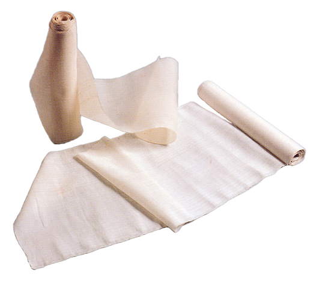

명주짜기
누에고치에서 풀어낸 견사(絹紗)로 짠 무늬가 없는 평직 직물을 만드는 기술

제작과정
명주실로 날실을 날고 베메기로 날실에 풀을 먹여 도투마리에 감아서 베틀에 올려 잉아실을 걸고 날실 끝을 말코에 매면 명주짜기 준비가 모두 끝난다. 직녀가 베틀 앉을깨에 앉아 부티를 허리에 걸고 베틀신을 신고 발을 앞뒤로 밀고 당기며 날실을 개구(開口)시켜 북속의 씨실꾸리에서 씨실을 넣고 바디로 치면 명주가 짜이게 된다.
사용재료
명주는 뽕나무를 재배하고 누에를 치는 일부터 시작된다. 명주실은 누에고치를 끓는 물에 넣고 실 끝을 풀어서 자새·왕챙이 등의 기구로 실켜기를 해 타래실을 만든 것이다.
특징
예전에는 전국 각지의 가정에서 베틀로 명주를 짜 자급자족하였는데, 조선 후기이후 개량식 직기로 대량 제직함에 따라 재래식 명주짜기는 급격히 쇠퇴하게 되었다. 더구나 오늘날에는 화려한 견직물에 밀려 명주의 수요가 줄어들어 간신히 그 명맥만을 이어오고 있다.
전승자
| 보유구분 | 이름 | 성별 | 기예능 | 지역 | 인정일 |
|---|---|---|---|---|---|
| 명예보유자 | 이규종(李圭宗) | 여 | 명주짜기 | 경북 | 2020-07-27 |
소재지
경북